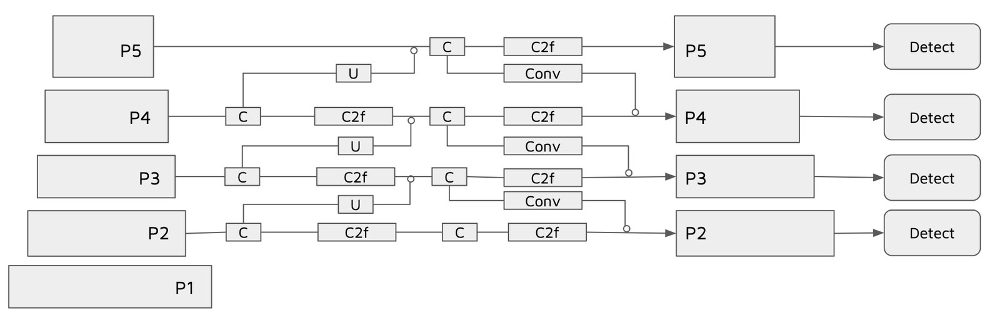
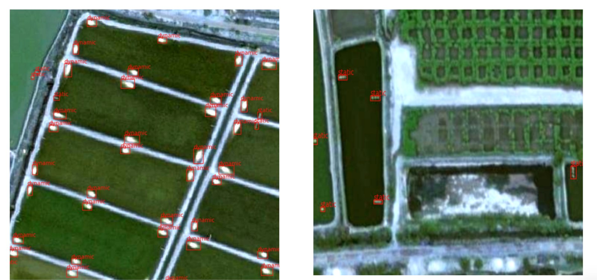
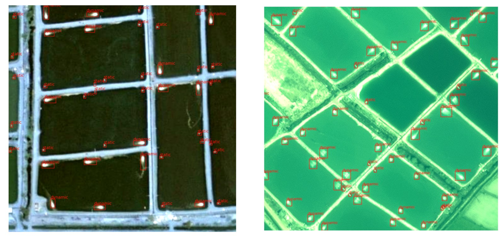

Object detection · micro-targets
Aerator Detection & On/Off Classification
A YOLOv8 detector tuned for micro-targets that locates individual pond aerators and classifies whether each one is running, at 78% mAP.
- Task
- Detection +
state classification - Model
- YOLOv8
micro-target tuned - Head
- P3 — stride 8
highest spatial resolution - Data
- Hand-annotated
satellite imagery - Result
- 78% mAP
The problem
The task is to detect aerators in satellite imagery and classify each one as ON or OFF. That is hard for three compounding reasons: aerators occupy only a few pixels, they sit against low-contrast water with almost no edge to key on, and varying surface reflections change their appearance from scene to scene. Both the detection and the state classification suffer.
Aerator state matters operationally. Aeration is what keeps dissolved oxygen in a stocked pond survivable, so knowing which units are running — across a whole farm cluster, without visiting it — is a direct read on how the site is being managed.
What I built
- A YOLOv8 detector specialised for micro-target detection that both localises aerators and assigns each one an on/off state, reaching 78% mAP.
- A detection architecture driven from the P3 head — the stride-8, highest-spatial-resolution output — since targets this small carry no usable signal at the coarser P4 and P5 scales.
- An annotated satellite dataset built for training the model.

Why the head choice is the whole problem
A standard detection pyramid distributes objects across scales — small objects to the fine head, large objects to the coarse ones. An aerator at Sentinel-scale resolution is small enough that by the time the feature map has been downsampled to P4 or P5, the target has been pooled away entirely. Detection therefore has to be driven from the finest available stride, and the rest of the architecture follows from that constraint rather than from a default configuration.


Results
- 78% mAP on combined detection and on/off state classification.
- Individual aerators resolved at a scale where they occupy only a handful of pixels.